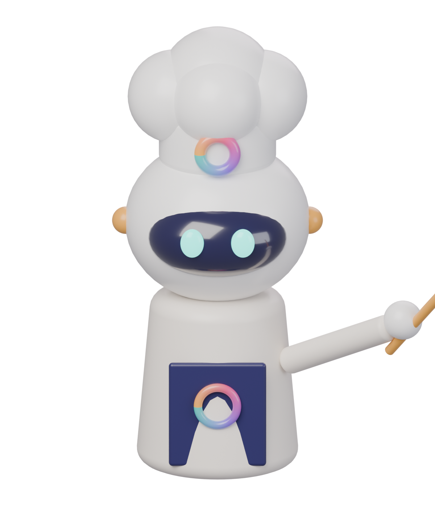

The Kitchen · identity v3

Chef OCIX
The studio’s mascot. Rainbow emblem = the logo’s ring. Appears on home, 404, about and loading.
Three materials — and when to use each
Colour — wall, ink, and the logo’s four spices
Clay (neumorphic)
The kitchen surfaces: nav, back buttons, hobs, step tiles. Same colour as the wall, lifted by light.
Pressed state
Pop (3D buttons)
Only for actions. A 5px solid base that squashes on press.
Taste →
Lift the lid
Wall
#ECE8F3
#ECE8F3
Navy ink
#27245A
#27245A
Italic
#5B4FC4
#5B4FC4
Teal
served / open
served / open
Violet
#7B4FD6
#7B4FD6
Magenta
#E0457B
#E0457B
Amber
heat / CTA
heat / CTA
Every object is a door
- Cloche → Vigilante (served)
- Pot → DraftShield · Dough → GymX · Popcorn → Do It!
- Fridge → Recipes (blog) · Spice shelf → Free tastings
- Chef → The cook (about) · Logo mark → the burner / heat dial
Motion
- Hover an object: it lifts, its glass label pops; the chef turns to look.
- Click: camera dollies into that object, which becomes the product page’s hero.
- Steam, lid, dough and popcorn loop; the cloche glows. Reduced motion = still frames.
- One screen per page on desktop.